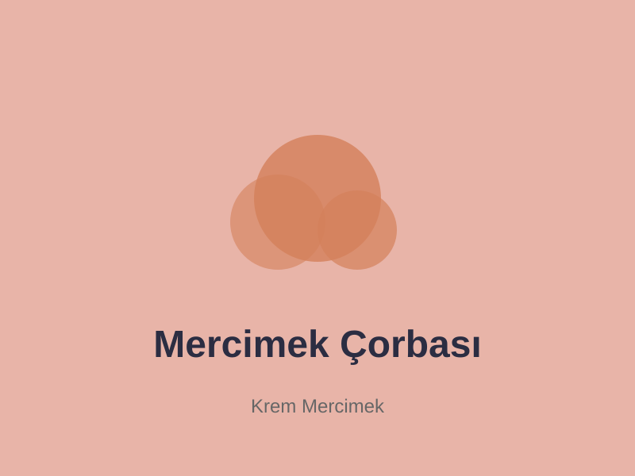
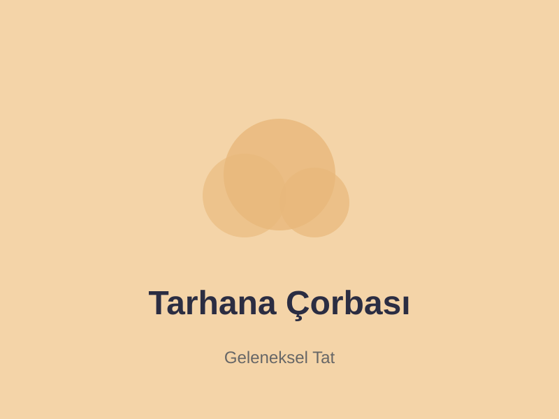
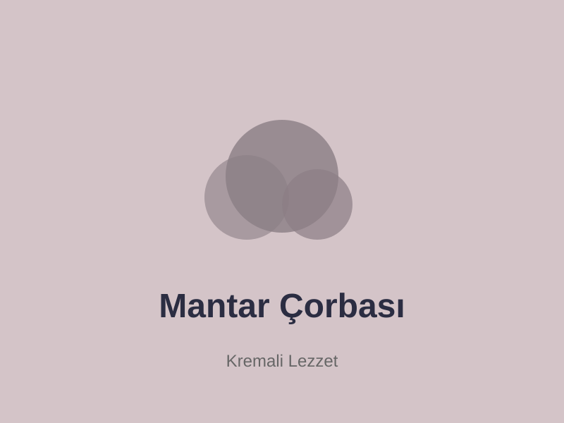
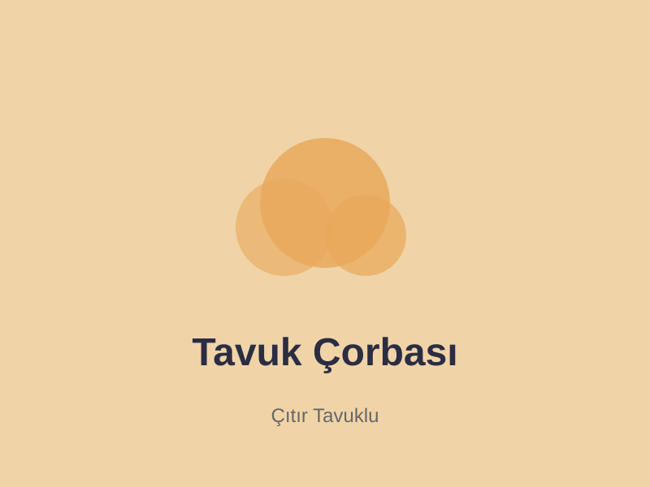
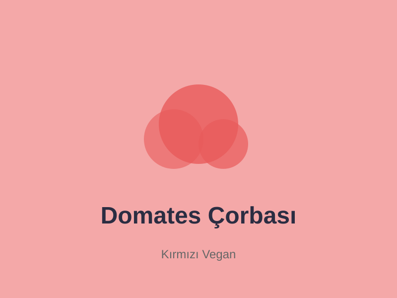

Çorba Tarifleri
En çok yapılan ve seven tarafından seçilmiş nefis çorba tariflerimiz





Türk mutfağının klasik lezzeti, ev yapımı en güzel mercimek çorbası. İçinde kaşar peyniri ve taze otlarla hazırlandı!
Tarife GitEn çok yapılan ve seven tarafından seçilmiş nefis çorba tariflerimiz






Bir çorbayı çorbaya çevirenlerin sırlarını öğrenin. Doğru tuz alma, düşük ateşte pişirme ve kaliteli malzeme seçiminin önemini keşfedin.
Devamını Oku